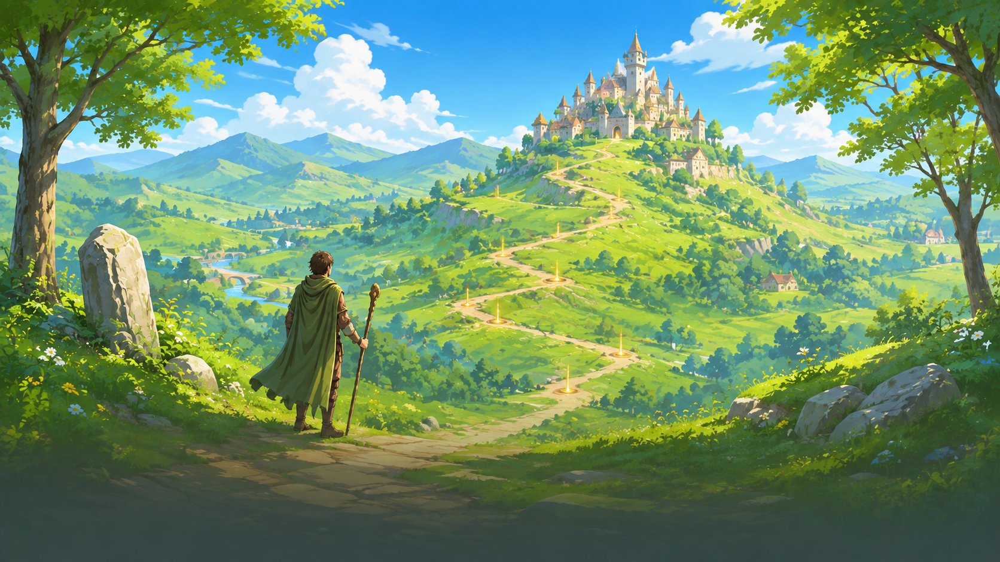

Choisir le bon parcours pour démarrer, rejoindre ou reprendre une partie.
Comprendre ce que cela implique
Jeu rapide et préparation détaillée répondent à deux besoins : entrer dans une salle avec peu de réglages, ou préparer les lieux et le terrain d’une sortie. Dans les deux cas, choisir un joueur et valider le terrain ne remplace pas la validation du démarrage par le serveur.
Les paragraphes datés ci-dessous retracent l’évolution de l’interface. Ils expliquent notamment pourquoi un ancien écran ou bouton peut avoir été déplacé ; ils ne constituent pas de nouvelles règles de progression.

Dans cet article
- Présentation de la préparation
- Menu pendant la partie
- Commandes de la carte
- Validation du parcours et carte de placement (11 octobre 2026)
- Parcours rapide (11 octobre 2026)
- Console organisateur et retour au jeu (11 octobre 2026)
- Parcours guidé et carte agrandie (14 octobre 2026)
- Déplacer les points du terrain (14 octobre 2026)
- Fiches de personnage communes (16 octobre 2026)
- Zone système du téléphone et suppression des profils (18 octobre 2026)
- Validation initiale et zones de sécurité du scénario (19 octobre 2026)
- Correction du retour de test (20 octobre 2026)
- Même sélection de personnage après création ou connexion (21 octobre 2026)
- Charger une partie depuis l’accueil
Détails de référence
Texte de référence mis en forme et conservé dans l’historique de cet article. Les paragraphes datés peuvent décrire une évolution ou une étape antérieure.
Lorsqu’un panneau de gestion est ouvert, le rendu serveur en arrière-plan actualise les ressources ouvertes et l’affichage des quêtes sans reconstruire la carte ni les panneaux de gestion. Le test de ce comportement fournit explicitement le contrôleur de quêtes et vérifie son appel. Cette correction de fixture ne change aucune règle ni aucun calcul serveur.
Le démarrage accepte un catalogue sans l’ancien camp de brigands : il ne tente plus d’y ajouter un héros si ce lieu est absent. Le test de remplacement de la session reste actif et vérifie le lancement GPS avec le catalogue actuel. Cette correction évite une erreur d’interface ; elle ne crée aucun lieu ni récompense.
Après la page de titre, le menu propose quatre choix avant la sélection du joueur :
Jeu rapide : création d’une salle avec les réglages par défaut du serveur (1 joueur, GPS réel), puis affichage de la page Joueurs pour choisir le héros et se déclarer prêt. La zone GPS doit être validée avant de se déclarer prêt. Les réglages restent accessibles.
Planifier une partie : création d’une salle, puis ouverture directe de la grande carte de playarea. Après validation, présentation du scénario et des quêtes, préparation des lieux, impression et installation des QR codes, puis vérification avant ouverture. Voir Préparation détaillée IRL.
Rejoindre une partie : ouverture du formulaire de code après le choix du joueur. Le serveur valide l’inscription.
Partie test : préparation existante sur carte fictive.
Le retour depuis le choix du joueur ou le formulaire de connexion ramène au menu des aventures. Le retour depuis ce menu ramène à la page de titre. L’accueil distingue « Reprendre la partie en cours » (reconnexion avec le jeton du navigateur) et « Charger une partie » (catalogue des sauvegardes serveur).
Le retour au menu masque aussi le pied de la salle et retire la présentation de l’éditeur de terrain. Les tests des quatre parcours simulent les classes du DOM et vérifient ce nettoyage. Cette correction de la fixture ne modifie aucun parcours, aucune permission ni règle de jeu.
Identité, création, inscription, configuration et démarrage restent validés par le serveur. La préparation détaillée ajoute la sélection des quêtes indépendantes, les rôles organisateur et les placements QR officiels. Jeu rapide ne choisit pas automatiquement le héros et ne lance pas automatiquement la partie.
Les nouvelles parties utilisent par défaut 1 joueur et GPS réel. L’organisateur peut augmenter la capacité avant d’inviter d’autres joueurs ou choisir la simulation. Le duel exige toujours deux joueurs. Partie test demande explicitement la simulation ; une reprise garde les paramètres enregistrés dans la sauvegarde.
Présentation de la préparation
Le lobby conserve le fond extérieur boisé, avec des panneaux clairs et des textes bruns contrastés. Les profils ont des boutons de même hauteur (64 pixels) et une croix de suppression distincte (44 pixels), avec libellé accessible et confirmation avant effacement. Les champs et sélecteurs restent contenus dans leurs fiches.
Les étapes Scénario, Impression, Installation et Vérification suivent leur ordre dans la progression. Les actions Retour et Continuer sont regroupées en bas ; les réglages proposent aussi Enregistrer dans cette barre. Les panneaux de recherche du terrain et les fiches de lieux utilisent les mêmes couleurs claires. Ces changements concernent uniquement la présentation et la navigation : toutes les validations restent effectuées par le serveur.
La préparation reprend maintenant les pages et les cartes de choix du test local : type de partie, mode de position, difficulté et rythme se sélectionnent par cartes radio. La progression affiche des traits cliquables, avec le nom de l’étape courante et les autres noms au survol ou au focus clavier. Les étapes disponibles du test local sont également accessibles au clic et au clavier. Les commandes continuent de passer par les formulaires et validations existants.
Sur le terrain, Ma position et Choisir un lieu partagent le même panneau ; le titre Zone de jeu GPS est retiré. Dès qu’un contour valide est tracé, le statut indique sa surface, son périmètre extérieur approximatif et les dimensions est–ouest × nord–sud du rectangle englobant. Les exclusions ne s’ajoutent pas au périmètre extérieur. Ces mesures sont des indications de dessin, sans effet sur les permissions, les distances d’interaction ou la validation officielle de la zone par le serveur.
Menu pendant la partie
Le code de partie reste affiché en haut. Un sous-menu Développement, fermé par défaut, regroupe Cheat / Triche, Debug (terrain, quêtes et pause), Heatmap, Brouillard de guerre et les filtres de traces. Il organise les outils existants ; il ne constitue pas une nouvelle permission administrateur.
L’organisateur dispose de deux actions distinctes, en solo serveur comme en multijoueur :
Sauvegarder et quitter demande un nom et conserve la partie dans les sauvegardes serveur, puis ferme la session pour tous les joueurs.
Quitter sans sauvegarde — Détruire la partie demande une confirmation explicite. Le serveur vérifie que le demandeur est l’organisateur, supprime la partie active et invalide toutes ses sessions. Tous les joueurs reviennent au menu ; le code ne permet plus de rejoindre cette partie. Aucune nouvelle sauvegarde n’est créée et les anciennes sauvegardes sont conservées.
Un autre joueur ne peut pas fermer la partie pour tout le groupe. En cas de refus serveur ou d’échec réseau, l’interface affiche l’erreur sans quitter localement la partie.
Commandes de la carte
Le menu et le résumé de quête occupent le haut de l’écran. Le résumé est alimenté par la mission active et les actions reçues du serveur, y compris avec le nouveau moteur de quêtes ; il ne calcule aucune progression locale. En présence de plusieurs missions actives, la première dans la vue officielle est affichée. Le toucher ouvre les détails. Sans mission active, le résumé est masqué.
Les pouvoirs ont une taille fixe de 48 × 48 pixels, sans réduction selon le texte. Leur conteneur est transparent, sans bordure, ombre ni flou ; les textes peuvent dépasser en attendant les icônes. Les pouvoirs sont centrés en bas, sur une rangée au-dessus de la languette de lieu lorsqu’elle est visible. Sans languette, cette rangée descend juste au-dessus de la navigation permanente. Le bouton de recentrage, réduit à 44 pixels, est placé à gauche à la même hauteur. En portrait, la rangée remonte au-dessus de la languette pleine largeur. En paysage, la fiche de lieu reste latérale à droite et la rangée reste basse, centrée au-dessus de la navigation.
La navigation des écrans reste permanente en bas sur la carte. Une seule languette s’affiche au-dessus de la navigation pour le lieu atteint ou sélectionné par clic. Sans lieu sélectionné ou atteint, aucune languette ne doit être visible. Cliquer sur la carte pour fermer la fiche efface la sélection ; quitter le lieu atteint ferme également son aperçu. Les lieux distants cliqués restent consultables dans les deux orientations ; leurs interactions demeurent bloquées sans proximité officielle. Les fiches ouvertes restent au-dessus de la navigation basse.
Ces modifications concernent uniquement la présentation : les effets, recharges, quêtes, déplacements et interactions restent calculés et validés par le serveur.
Le bouton du menu de jeu affiche uniquement les trois barres ☰, sans texte visible. Le libellé accessible « Menu du jeu » reste présent pour les lecteurs d’écran. Le contenu et le fonctionnement du menu sont inchangés.
En portrait, les boutons de zoom de la carte sont décalés sous le bouton de menu pour rester accessibles. Leur disposition paysage ne change pas. Ces réglages ne modifient aucune règle de jeu.
Validation du parcours et carte de placement (11 octobre 2026)
La préparation détaillée IRL se valide étape par étape : terrain, scénario et quêtes, lieux, puis vérification. Les étapes suivantes restent verrouillées tant que les étapes précédentes ne sont pas validées ; les erreurs officielles du serveur empêchent de continuer. Les lieux se configurent une fiche à la fois et les actions restent visibles en bas ; seul le contenu central défile si la hauteur disponible ne suffit pas. La date, l’impression et l’installation apparaissent uniquement lorsqu’au moins un lieu utilise un QR code. La date est alors obligatoire pour les fiches ; imprimer reste facultatif. Sans QR, aucune date ne bloque le lancement. La carte de placement montre les autres positions déjà enregistrées avec une icône et le cercle du rayon d’interaction. Toucher un repère affiche son nom pendant deux secondes, ou jusqu’à une autre action sur la carte. Les positions restent validées par le serveur ; les placements automatiques futurs ne sont pas affichés avant leur génération.
Les boutons des joueurs ont une largeur uniforme (260 px, limitée à la largeur disponible), une hauteur de 60 px et une suppression compacte. Les fiches, indications et informations du lobby utilisent des textes bruns sur fond clair. Les sélecteurs restent dans leurs contenants. Ces corrections visuelles ne changent aucune règle de jeu.
Parcours rapide (11 octobre 2026)
En partie rapide, le parcours est Terrain → Réglages → Joueurs. La zone GPS doit être validée avant de continuer et les réglages sont enregistrés par le serveur avant l’accès aux joueurs. Le scénario et sa préparation détaillée sont accessibles à titre facultatif ; ils ne sont pas une étape imposée du parcours rapide. La rubrique Reprise reste accessible depuis le parcours de reprise à l’accueil et ne figure plus dans une nouvelle partie rapide. Les réglages rapides utilisent des choix compacts, sans textes d’explication ni grands espaces. Ces changements concernent la navigation et la présentation ; les règles et validations serveur des parties restent identiques.
Console organisateur et retour au jeu (11 octobre 2026)
Pendant une partie, l’accès Organisateur se trouve dans le menu de la partie, avec les mêmes conditions de rôle qu’auparavant. Il ferme le menu puis ouvre la console. Le bouton Retour au jeu de la console masque le lobby, les pages de configuration et l’écran de préparation, ferme les fenêtres de placement ou de scan encore ouvertes et retire les styles de l’éditeur pour laisser le jeu visible. Le lecteur QR libère aussi la caméra lorsqu’une fenêtre est fermée de cette manière. Ce changement concerne uniquement l’interface et ne modifie aucune permission ni règle serveur.
Parcours guidé et carte agrandie (14 octobre 2026)
La création de partie suit un parcours guidé : Terrain → Réglages → Scénario et préparation → Joueurs. En partie rapide, le scénario reste facultatif et les réglages conduisent directement aux joueurs. Les étapes portent un nom visible et l’écran indique la progression avec une courte consigne. Enregistrer et continuer valide les réglages avant de poursuivre ; Retour remonte à l’étape précédente. Les options de position, de difficulté et de rythme sont regroupées dans Options avancées. Les actions principales restent accessibles sans imposer d’ouvrir ces options.
Le terrain se dessine dans une fenêtre cartographique qui occupe presque tout l’écran, et tout l’écran sur téléphone. La recherche, Ma position, Annuler le dernier point et Valider la zone restent accessibles ; les exclusions et l’effacement se trouvent dans Options du tracé. Fermer conserve le brouillon et permet de rouvrir la carte ; une validation réussie ferme la fenêtre. Les boutons gardent une hauteur tactile minimale de 44 px. Cette réorganisation concerne la présentation : elle ne modifie ni les règles du moteur ni les contrôles serveur, et n’ajoute pas encore le mode intérieur sans GPS.
La reprise reste accessible dans Options avancées hors partie rapide ; elle n’apparaît plus comme onglet de création. Les réglages doivent être enregistrés avant d’accéder au scénario ou aux joueurs, y compris dans le parcours détaillé.
Déplacer les points du terrain (14 octobre 2026)
Pendant le tracé, l’organisateur peut faire glisser les points du contour et des exclusions, à la souris ou au doigt. Au relâchement, le brouillon, la surface et le quadrillage sont actualisés. Les poignées ont une zone de saisie de 44 px ; déplacer un point ne crée pas un nouveau sommet. Le changement reste local au brouillon jusqu’à Valider la zone, puis le serveur contrôle le terrain comme auparavant. Les joueurs en consultation ne peuvent pas déplacer ces points.
Fiches de personnage communes (16 octobre 2026)
Le choix du personnage dans les parties rapides, planifiées et rejointes utilise les mêmes fiches que la partie test : portrait, nom, spécialité et caractéristiques de la classe sélectionnée. Le catalogue et le composant de présentation sont partagés entre les parcours. Chaque joueur sélectionne une fiche ; le serveur confirme le choix et les conditions de disponibilité. Aucune classe n’est choisie automatiquement dans le lobby si le joueur n’en a pas encore choisi. Les fiches sont verrouillées pendant la partie et lors de la reprise d’une sauvegarde ; les rôles organisateurs sans héros restent sans sélection de personnage. Ce changement ne modifie ni les statistiques, ni les règles de création des héros, ni les validations de démarrage.
Zone système du téléphone et suppression des profils (18 octobre 2026)
Les écrans Quelle aventure ? et Qui joue ? réservent désormais une marge extérieure correspondant aux zones de sécurité du téléphone (barre d’état, encoche et zone du geste d’accueil). Leur hauteur maximale est limitée à l’espace restant ; le contenu peut défiler sur les petits écrans sans masquer le titre. Le choix d’aventure utilise des espacements réduits. La suppression d’un joueur est présentée par une icône de corbeille dans un bouton discret de 44 × 44 px, avec un libellé accessible portant le nom du joueur. La confirmation et les contrôles serveur de suppression restent identiques. Ces corrections visuelles ne changent aucune règle du jeu.
Validation initiale et zones de sécurité du scénario (19 octobre 2026)
La fenêtre de préparation du scénario respecte les zones de sécurité du téléphone en haut et en bas. Sa hauteur est limitée à l’espace restant, tandis que le contenu central peut défiler et que les actions de validation restent accessibles. Valider et continuer initialise correctement une préparation encore absente : il n’est plus nécessaire de retirer puis remettre une quête. Le passage à l’étape suivante attend la confirmation de l’enregistrement serveur ; en cas de refus ou d’enregistrement non confirmé, l’étape reste affichée avec un message. Cette correction d’interface ne modifie ni la sélection des quêtes, ni leurs règles, ni les validations du moteur.
Correction du retour de test (20 octobre 2026)
Le menu Sauvegardes est accessible à l’organisateur dans le lobby, y compris en partie rapide, sans être renvoyé à l’écran terrain. Son ouverture charge automatiquement les sauvegardes disponibles pour son identité serveur. Créer un lobby avec le même compte ou le même appareil, ouvrir Sauvegardes et charger la partie nommée ; les anciens joueurs récupèrent ensuite leurs héros. Les contrôles serveur de propriété et de reprise restent identiques.
Même sélection de personnage après création ou connexion (21 octobre 2026)
La création, le test et la connexion au lobby utilisent le même contenu de sélection de classe : titre, description, portraits, forces et caractéristiques, avec une légende accessible commune. Le sélecteur affiche un chargement tant que le catalogue n’est pas disponible ; la liste déroulante historique n’est plus présentée comme une interface alternative. L’arrivée par Rejoindre cible explicitement la page des joueurs et de leur personnage.
Une classe déjà confirmée par le serveur est conservée lors du rafraîchissement du catalogue. Le lobby ne présélectionne pas une classe à la place d’un joueur et le bouton de disponibilité reste désactivé pendant le chargement des fiches. Les verrouillages d’une partie commencée ou d’une sauvegarde reprise et les rôles organisateurs sans héros restent appliqués. Ces ajustements de présentation ne changent ni les statistiques ni les validations serveur.
Charger une partie depuis l’accueil
Correction du 24 octobre 2026 : après chargement, le salon affiche directement les joueurs présents et les héros attendus. La reprise ne repasse pas par les validations locales de création (terrain, réglages et préparation), même si la sauvegarde contient une préparation activée. Cela évite un renvoi vers une étape masquée. Les confirmations de disponibilité et les validations de démarrage restent contrôlées par le serveur ; aucune règle du jeu ne change.
« Reprendre la partie en cours » reconnecte la session courante et ne représente pas la bibliothèque des sauvegardes. Ce bouton reste conditionné à la présence d’un jeton local.
« Charger une partie » est disponible même sans session enregistrée. Le panneau présente toutes les sauvegardes du serveur, avec leur nom, date, compte organisateur et nombre de joueurs. La consultation ne crée aucun salon et ne charge aucun monde de jeu. Le choix Charger sélectionne explicitement le compte organisateur indiqué, puis demande au serveur de préparer la reprise. Un compte occupé sur un autre appareil est refusé. Une sauvegarde dont le compte organisateur a disparu reste visible mais ne peut pas être chargée par ce parcours.
Le serveur vérifie le propriétaire et réutilise le chargement de sauvegarde existant. Le salon est créé seulement au choix d’une sauvegarde, puis le héros et les places enregistrés sont rétablis ; les autres joueurs rejoignent et chacun se déclare prêt avant le démarrage. Les statistiques, ressources, quêtes et combats proviennent toujours du serveur. La sauvegarde source est conservée après chargement. La reprise préparée est elle-même persistée.
Les sauvegardes restent dans server-state.json, sous RPG_GPS_DATA_DIR (par défaut /var/lib/rpg-gps). Le Dashboard affiche leur catalogue dans l’onglet Sauvegardes et permet de supprimer une sauvegarde après confirmation. Supprimer la source ne supprime pas une partie déjà chargée, qui possède sa propre copie, ni les comptes joueurs. Ces changements concernent l’accès et la gestion des sauvegardes, sans modifier les règles du moteur.